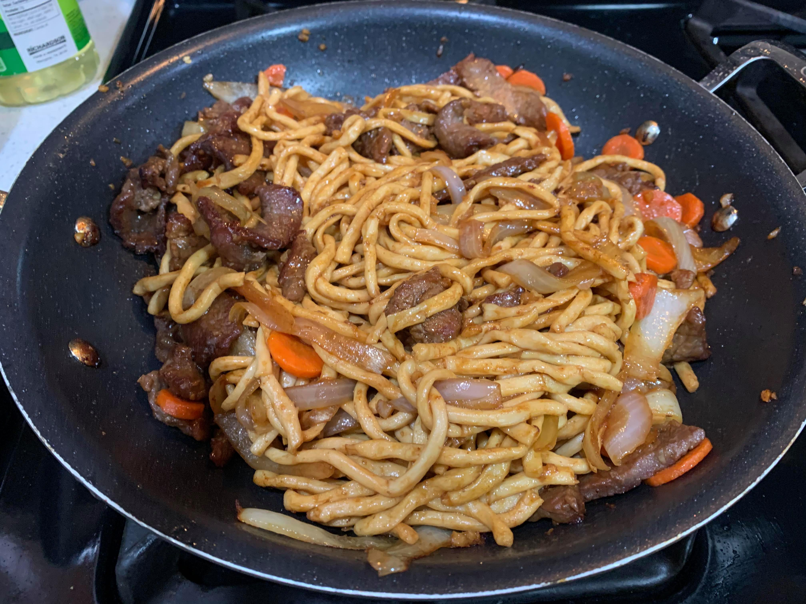

Udon Noodles Stir-fry

Ingredients:
Marinade:
- 1 lb Meat of choice
- 2-3 tbsp Soy sauce
- Splash of rice wine vinegar
- 1 tbsp Cornstarch
- 1/2 tsp Baking soda
Sauce:
- 1/4 cup Soy sauce
- 1/4 cup Water
- 1 1/2 tbsp Brown sugar
- 1/4 tsp Mirin
Other Ingredients:
- 1 pack Udon Noodles
- 1 large Onion
- 3 cloves Garlic
- 3 inch piece Ginger
- Any Vegetables
- 1 tbsp Dark soy sauce (optional)
Instructions:
- Slice meat of choice into strips. Mix marinade ingredients and let the meat marinate overnight.
- Prepare sauce by mixing sauce ingredients together. Cut onion into slices and mince the garlic and ginger.
- Once the meat is ready to be cooked, fry until almost completely cooked and then remove from pan and reserve for later.
- In the same pan, begin to fry the onions, garlic, and ginger. Once softened, mix in the sauce.
- Add in the cooked noodles, meat, and vegetables. Stir until completely heated through.
- Optionally, mix in the dark soy sauce for a deeper color and flavor.